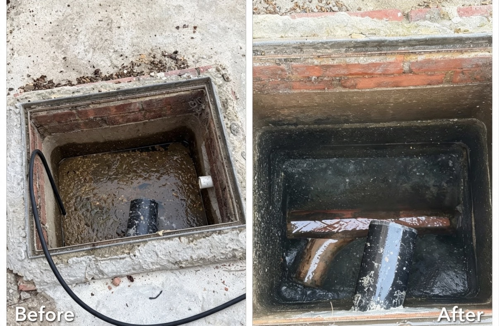

Before & After


Real Drainage Projects
Real drainage jobs completed by FLOWPOINT across London and the surrounding areas.
Blocked Gully Cleared
High-pressure jetting restored full flow within minutes
Shower Drain Unblocked
Hair and soap build-up completely removed.
CCTV Drain Survey
Camera inspection located the fault quickly and accurately.

High Pressure Water Jetting
Powerful jetting removed stubborn debris and restored the drainage system to full flow.
Need an Emergency Drain Engineer?
Available 24 hours a day, 7 days a week across London and the surrounding areas.
📞 Call 07506 491178